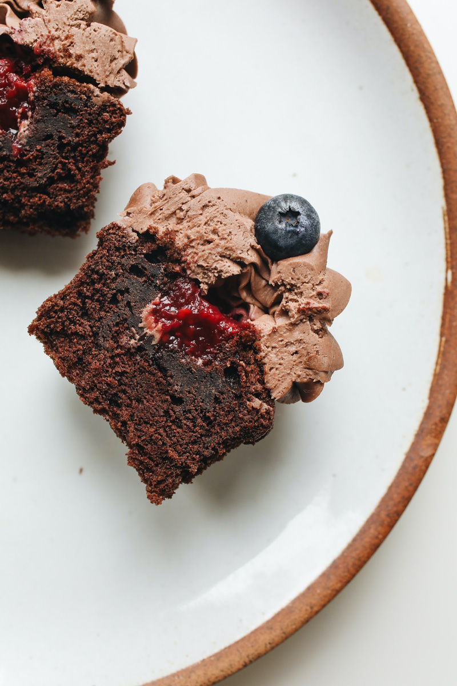

Chocolate Raspberry Cupcakes
Description
Fill chocolate cupcakes with raspberry preserves for a sweet surprise, and then top with a fresh berry for a nod to what's inside.
- Cook: 18 minutes
- Total: 1 hour 3 minutes
- Prep: 40 minutes
- Servings: 24
- Yield: 24 cupcakes
- Calories: 377
- Protein: 3.7g
- Carbohydrates: 61.3g
- Fat: 14.3g

Ingredients
Chocolate Raspberry Cake:
- 2 cups flour
- 3/4 cup unsweetened cocoa powder
- 1 teaspoon baking soda
- 3/4 teaspoon baking powder
- 1/2 teaspoon salt
- 3/4 cup butter, softened
- 1 1/2 cups sugar
- 3 large eggs
- 1 1/2 cup milk
- 1/2 cup seedless raspberry preserves
- 2 teaspoons Vanilla Extract
Raspberry Frosting:
- 8oz cream cheese, softened
- 1/2 cup butter, softened
- 1/4 cup seedless raspberry preserves
- 6 cups confectioners' sugar
Steps / Directions
- Preheat oven to 350 degrees
- Stir together flour, cocoa powder, baking soda, baking powder, and salt in a medium bowl. In a large mixing bowl, beat the butter with an electric mixer on medium to high speed for 30 seconds. Gradually add sugar, about 1/4 cup at a time, beating on medium speed until combined. Scrape sides of bowl; beat about 2 minutes more or until light and fluffy. Add the eggs, one at a time, beating well after each addition. Beat in the vanilla. Alternately add the flour mixture and milk to the butter mixture, beating on low speed after each addition just until combined. Beat on medium to high speed for 20 seconds more.
- Spoon batter into prepared muffin cups, filling each one-half to two-thirds full. Use the back of a spoon to smooth out batter in cups.
- Bake about 18 minutes or until a wooden toothpick inserted in centers comes out clean. Cool cupcakes in muffin cups on wire racks for 5 minutes. Remove cupcakes from muffin pans. Cool completely on wire racks.
- Use a small paring knife to remove a cone-shape piece of cupcake, going down only about one-third to one-half of the way into the cupcake. Fill each with 1 teaspoon preserves. Top with the removed portion of the cupcake, then with Raspberry Frosting and fresh raspberries.
- Raspberry Frosting: Beat cream cheese and butter in a large mixing bowl with an electric mixer on medium to high speed until light and fluffy. Gradually add powdered sugar, beating until smooth. Gently fold in raspberry preserves.